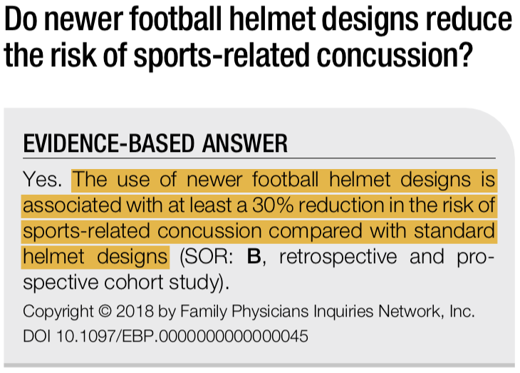

Football Helmets
Improved helmet designs for impact detection, monitoring, and reporting to prevent CTE, improve concussion protocols, and reduce injury in football players.
Topological Optimization (2016)
Topology has to do with geometric analysis of a surface (like an altitude map), so this paper is looking at optimizing the surface of the football helmet to reduce tensile pressures and shear strains inside the helmet/brain.
“Constrained topological optimization of a football helmet facemask based on brain response.” Johnson et al. Materials and Design. 2016. [.pdf]
Big Idea: You might look at the figures in this paper or consider using them in your presentation as rationale for the design of your helmet. This kind of data is very compelling when you can quantitatively show that you’ve reduced the stresses the brain will experience.
Kinematic Measuring Device (2016)
Simply put, this is an example of where you might put your measuring device. These researchers installed their g-force tracker inside the padding at the top of the helmet, and the data they recorded was useful for analysis.
“Laboratory Evaluation of the gForce Tracker, a Head Impact Kinematic Measuring Device for Use in Football Helmets.” Campbell et al. Annals of Biomedical Engineering. 2016. [.pdf]
Big Idea: There’s a growing (and urgent) interest in monitoring the severity of concussive and subconcussive head impacts in youth, amateur, and professional football players. This gives you one example of a demonstrably reliable method to take kinematic measurements in real time. To get really fancy, you might consider proposing a combination of this technology and the nancomposite foam sensors described in this paper for an ultra-robust measurement technique.
Inadequate Helmet Fit (2016)
If your helmet doesn’t fit well, you’re more likely to get a severe concussion (or a worse subconcussive impact).
“Inadequate Helmet Fit Increases Concussion Severity in American High School Football Players.” Greenhill et al. Annals of Biomedical Engineering. 2016. [.pdf]
Big Idea: This might be another angle for you guys to take on this idea — “governing bodies” (maybe, even on a federal level) should be involved in regulating these helmets. You might include in your presentation an idea about writing a position paper or hiring a lobbying company to market the idea that people need your helmets (in a real sense, because they are safer) and that there should be subsidized funding in place to make that possible for all students. Just a thought!
Cumulative Helmet Impacts (2016)
This study will give you guys a really strong idea of which variables you need to measure to be able to accurately estimate changes in clinical features like white matter volume (which, as we discussed, might be important for getting players to relevant medical or psychiatric care before it’s too late).
“Novel Method of Weighting Cumulative Helmet Impacts Improves Correlation with Brain White Matter Changes After One Football Season of Sub-concussive Head Blows.” Merchant-Borna et al. Annals of Biomedical Engineering. 2016. [.pdf]
Big Idea: I know this equation looks super daunting, but it’s just to show that you can actually assign a value to the combined quantity and severity of the hits, weighted for time between head impacts and time until assessment.
Newer Helmet Designs (2018)
It’s important to really justify an expensive and high-tech helmet design. We know that poorly fitting helmets can make concussions worse, but can a nice helmet decrease your risk of being concussed?
“Do newer football helmet designs reduce the risk of sports-related concussion?.” Gherman et al. Evidence-Based Practice. 2018. [.pdf]

Big Idea: It’s pretty much what we’d expect, but we still want to have reliable evidence to support our claims. Otherwise, our target buyers have to just “take our word,” and it’s not likely that they’ll do that since we’re newcomers to the market.
Summary Recommendations
You guys already knew about Xenith Helmets, so I think you’re on the right track in terms of taking inspiration from existing designs. Contouring the inside and outside of the helmet (its topology) in an optimal way will minimize forces on the brain (poorer helmet fit can make concussions worse). You’ve got options in terms of your measurement technology, since you can indirectly calculate white matter changes (with nasty math) while directly assessing acceleration with a gForce tracker or the nanocomposite foam sensors. However you choose to approach the tech, this is a hot-button item, especially as it relates to measuring, treating, and preventing CTE in younger athletes.